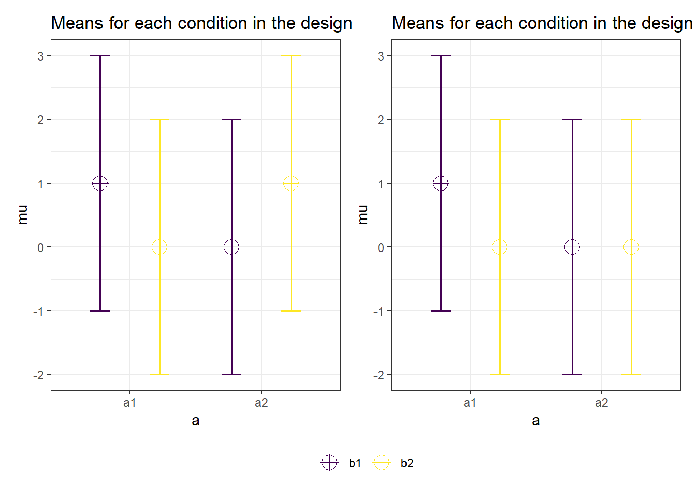

6 Effect Sizes
Effect sizes are an important statistical outcome in most empirical studies. Researchers want to know whether an intervention or experimental manipulation has an effect greater than zero, or (when it is obvious an effect exists) how big the effect is. Researchers are often reminded to report effect sizes, because they are useful for three reasons. First, they allow researchers to present the magnitude of the reported effects, which allow researchers to reflect on the practical significance of the effects they report, in addition to the statistical significance. Second, effect sizes allow researchers to draw meta-analytic conclusions by comparing standardized effect sizes across studies. Third, effect sizes from previous studies can be used when planning a new study in an a-priori power analysis.
A measure of effect size is a quantitative description of the strength of a phenomenon. It is expressed as a number on a scale. For unstandardized effect sizes, the effect size is expressed on the scale that the measure was collected on. This is useful whenever people are able to intuitively interpret differences on a measurement scale. For example, children grow on average 6 centimeters a year between the age of 2 and puberty. We can interpret 6 centimeters a year as an effect size, and many people in the world have an intuitive understanding of how large 6 cm is. Where a p-value is used to make a claim about whether there is an effect, or whether we might just be looking at random variation in the data, an effect size is used to answer the question how large the effect is. This makes an effect size estimate an important complement to p-values in most studies. A p-value tells us we can claim children grow as they age; effect sizes tell us what size clothes we can expect children to wear when they are a certain age, and how long it will take before their new clothes are too small.
For people in parts of the world that do not use the metric system, it might be difficult to understand what a difference of 6 cm is. To facilitate a comparison of effect sizes across situations where different measurement scales are used, researchers can report standardized effect sizes. A standardized effect size, such as Cohen’s d, is computed by dividing the difference on the raw scale by the standard deviation, and is thus scaled in terms of the variability of the sample from which it was taken. An effect of d = 0.5 means that the difference is the size of half a standard deviation of the measure. This means that effect sizes are determined both by the size of an effect and the size of the standard deviation, and difference in a standardized effect size can be caused by a difference in the size of the unstandardized effect, or by a difference in the standard deviation.
Standardized effect sizes are common when variables are not measured on a scale people are familiar with, or are measured on different scales within the same research area. If you ask people how happy they are, an answer of ‘5’ will mean something very different if you asked people to answer on a scale from 1 to 5 than if you asked them to answer on a scale from 1 to 9. Standardized effect sizes can be understood and compared regardless of the scale that was used to measure the dependent variable. Despite the ease of use of standardized effect size measures, there are good arguments to report and interpret unstandardized effect sizes wherever possible (Baguley, 2009).
Standardized effect sizes can be grouped in two families (Rosenthal, 1994): The d family (consisting of standardized mean differences) and the r family (measures of strength of association). Conceptually, the d family effect sizes are based on the difference between observations, divided by the standard deviation of these observations. The r family effect sizes describe the proportion of variance that is explained by group membership. For example, a correlation (\(r\)) of 0.5 indicates 25% of the variance (\(r^2\)) is explained by the difference between groups. These effect sizes are calculated from the sum of squares (the difference between individual observations and the mean for the group, squared, and summed) for the effect divided by the sums of squares for other factors in the design.
6.1 Effect sizes
What is the most important outcome of an empirical study? You might be tempted to say it’s the p-value of the statistical test, given that it is practically always reported in articles, and determines whether we call something ‘significant’ or not. However, as Cohen (1990) writes in his ‘Things I’ve learned (so far)’:
I have learned and taught that the primary product of a research inquiry is one or more measures of effect size, not p-values.
Although what you want to learn from your data is different in every study, and there rarely is any single thing you always want to know, effect sizes are a very important part of the information we gain from data collection.
A measure of effect size is a “quantitative reflection of the magnitude of some phenomenon that is used for the purpose of addressing a question of interest” (Kelley & Preacher, 2012). It is expressed as a number on a scale, and which scale is used depends on the effect size measure that is used. For unstandardized effect sizes, we can use a scale that people are very familiar with. For example, children grow on average 6 centimeters a year between the age of 2 and puberty. We can interpret 6 centimeters a year as an effect size. It is obvious an effect size has many benefits over a p-value. A p-value gives an indication that it is very unlikely children stay the same size as they become older – effect sizes tell us what size clothes we can expect children to wear when they are a certain age, and how long it will take before their new clothes are too small.
One reason to report effect sizes is to facilitate future research. It is possible to perform a meta-analysis or a power analysis based on unstandardized effect sizes and their standard deviation, but it is easier to work with standardized effect sizes, especially when there is variation in the measures researchers use. But the main goal of reporting effect sizes is to reflect on the question whether the observed effect size is meaningful. For example, we might be able to reliably measure that on average 19 years olds will grow 1 centimeter in the next year. This difference would be statistically significant in a large enough sample, but if you go shopping for clothes when you are 19 years old, it is not something you need care about. Let’s look at two examples of studies where looking at the effect size, in addition to its statistical significance, would have improved the statistical inferences.
6.2 The Facebook experiment
In the summer of 2014 there were some concerns about an experiment Facebook had performed on its users to examine ‘emotional mood contagion’, or the idea that people’s moods can be influenced by the mood of people around them. You can read the article here. For starters, there was substantial concern about the ethical aspects of the study, primarily because the researchers who performed the study had not asked for informed consent from the participants in the study (you and me), nor did they ask for permission from the institutional review board (or ethics committee) of their university.
One of the other criticisms of the study was that it could be dangerous to influence people’s mood. As Nancy J. Smyth, dean of the University of Buffalo’s School of Social Work wrote on her Social Work blog: “There might even have been increased self-harm episodes, out of control anger, or dare I say it, suicide attempts or suicides that resulted from the experimental manipulation. Did this experiment create harm? The problem is, we will never know, because the protections for human subjects were never put into place”.
If this Facebook experiment had such a strong effect on people’s mood that it made some people commit suicide who would otherwise not have committed suicide, this would obviously be problematic. So let us look at the effects the manipulation Facebook used had on people a bit more closely.
From the article, let’s see what the researchers manipulated:
Two parallel experiments were conducted for positive and negative emotion: One in which exposure to friends’ positive emotional content in their News Feed was reduced, and one in which exposure to negative emotional content in their News Feed was reduced. In these conditions, when a person loaded their News Feed, posts that contained emotional content of the relevant emotional valence, each emotional post had between a 10% and 90% chance (based on their User ID) of being omitted from their News Feed for that specific viewing.
Then what they measured:
For each experiment, two dependent variables were examined pertaining to emotionality expressed in people’s own status updates: the percentage of all words produced by a given person that was either positive or negative during the experimental period. In total, over 3 million posts were analyzed, containing over 122 million words, 4 million of which were positive (3.6%) and 1.8 million negative (1.6%).
And then what they found:
When positive posts were reduced in the News Feed, the percentage of positive words in people’s status updates decreased by B = −0.1% compared with control [t(310,044) = −5.63, P < 0.001, Cohen’s d = 0.02], whereas the percentage of words that were negative increased by B = 0.04% (t = 2.71, P = 0.007, d = 0.001). Conversely, when negative posts were reduced, the percent of words that were negative decreased by B = −0.07% [t(310,541) = −5.51, P < 0.001, d = 0.02] and the percentage of words that were positive, conversely, increased by B = 0.06% (t = 2.19, P < 0.003, d = 0.008).
Here, we will focus on the negative effects of the Facebook study (so specifically, the increase in negative words people used) to get an idea of whether there is a risk of an increase in suicide rates. Even though apparently there was a negative effect, it is not easy to get an understanding about the size of the effect from the numbers as mentioned in the text. Moreover, the number of posts that the researchers analyzed was really large. With a large sample, it becomes important to check if the size of the effect is such that the finding is substantially interesting, because with large sample sizes even minute differences will turn out to be statistically significant (we will look at this in more detail below). For that, we need a better understanding of “effect sizes”.
6.3 The Hungry Judges study
We see a graphical representation of the proportion of favorable parole decisions that real-life judges are making as a function of the number of cases they process across the day in Figure 6.1. This study is mentioned in many popular science books as an example of a finding that shows that people do not always make rational decisions, but that “judicial rulings can be swayed by extraneous variables that should have no bearing on legal decisions” (Danziger et al., 2011). We see that early on in the day, judges start by giving about 65% of people parole, which basically means, “All right, you can go back into society.” But then very quickly, the number of favorable decisions decreases to basically zero. After a quick break which, as the authors say, “may replenish mental resources by providing rest, improving mood, or by increasing glucose levels in the body” the parole decisions are back up at 65%, and then again quickly drop down to basically zero. They take another break, the percentage of positive decisions is back up to 65%, only to drop again over the course of the day.
If we calculate the effect size for the drop after a break, and before the next break (Glöckner, 2016), the effect represents a Cohen’s d of approximately two, which is incredibly large. There are hardly any effects in psychology this large, let alone effects of mood or rest on decision making. And this surprisingly large effect occurs not just once, but three times over the course of the day. If mental depletion actually has such a huge real-life impact, society would basically fall into complete chaos just before lunch break every day. Or at the very least, our society would have organized itself around this incredibly strong effect of mental depletion. Just like manufacturers take size differences between men and women into account when producing items such as golf clubs or watches, we would stop teaching in the time before lunch, doctors would not schedule surgery, and driving before lunch would be illegal. If a psychological effect is this big, we don’t need to discover it and publish it in a scientific journal - you would already know it exists.
We can look at a meta-meta-analysis (a paper that meta-analyzes a large number of meta-analyses in the literature) by Richard, Bond, & Stokes-Zoota (2003) to see which effect sizes in law psychology are close to a Cohen’s d of 2. They report two meta-analyzed effects that are slightly smaller. The first is the effect that a jury’s final verdict is likely to be the verdict a majority initially favored, which 13 studies show has an effect size of r = 0.63, or d = 1.62. The second is that when a jury is initially split on a verdict, its final verdict is likely to be lenient, which 13 studies show to have an effect size of r = .63 as well. In their entire database, some effect sizes that come close to d = 2 are the finding that personality traits are stable over time (r = 0.66, d = 1.76), people who deviate from a group are rejected from that group (r = .6, d = 1.5), or that leaders have charisma (r = .62, d = 1.58). You might notice the almost tautological nature of these effects. And that is, supposedly, the effect size that the passing of time (and subsequently eating lunch) has on parole hearing sentencings.
We see how examining the size of an effect can lead us to identify findings that cannot be caused by their proposed mechanisms. The effect reported in the hungry judges study must therefore be due to a confound. Indeed, such confounds have been identified, as it turns out the ordering of the cases is not random, and it is likely the cases that deserve parole are handled first, and the cases that do not deserve parole are handled later (Chatziathanasiou, 2022; Weinshall-Margel & Shapard, 2011). An additional use of effect sizes is to identify effect sizes that are too large to be plausible. Hilgard (2021) proposes to build in ‘maximum positive controls’, experimental conditions that show the largest possible effect that provides an upper limit on plausible effect size measures.
6.4 Standardised Mean Differences
Effect sizes can be grouped into two families (Rosenthal et al., 2000): The d family (based on standardized mean differences) and the r family (based on measures of strength of association). Conceptually, the d family effect sizes are based on a comparison between the difference between the observations, divided by the standard deviation of these observations. This means that a Cohen’s d = 1 means the standardized difference between two groups equals one standard deviation. The size of the effect in the Facebook study above was quantified with Cohen’s d. Cohen’s d (the d is italicized) is used to describe the standardized mean difference of an effect. This value can be used to compare effects across studies, even when the dependent variables are measured with different scales, for example when one study uses 7-point scales to measure dependent variables, while the other study uses 9-point scales. We can even compare effect sizes across completely different measures of the same construct, one study uses a self-report measure, and another study uses a physiological measure. Although we can compare effect sizes across different measurements, this does not mean they are comparable, as we will discuss in more detail in the section on heterogeneity in the chapter on meta-analysis.
Cohen’s d ranges from minus infinity to infinity (although in practice, the mean difference in the positive or negative direction that can be observed will never be infinite), with the value of 0 indicating there is no effect. Cohen (1988) uses subscripts to distinguish different versions of Cohen’s d, a practice I will follow because it prevents confusion (without any specification, Cohen’s d denotes the entire family of effect sizes). Cohen refers to the standardized mean difference between two groups of independent observations for the sample as \(d_s\). Before we get into the statistical details, let’s first visualize what a Cohen’s d of 0.001 (as was found in the Facebook study) means. We will use a visualization from http://rpsychologist.com/d3/cohend/, a website made by Kristoffer Magnusson, that allows you to visualize the differences between two measurements (such as the increase in negative words used by the Facebook user when the number of positive words on the timeline was reduced). The visualization actually shows two distributions, one dark blue and one light blue, but they overlap so much that the tiny difference in distributions is not visible (click the settings button to change the slider settings, and set the step size to 0.001 to reproduce the figure below in the online app).

The four numbers below the distribution express the effect size in different ways to facilitate the interpretation. For example, the probability of superiority expresses the probability that a randomly picked observation from one group will have a larger score than a randomly picked observation from the other group. Because the effect is so small, this probability is 50.03% - which means that people in the experimental write almost the same number of positive or negative words as people in the control condition. The number needed to treat index illustrates that in the Facebook study a person needs to type 3570 words before we will observe one additional negative word, compared to the control condition. I don’t know how often you type this many words on Facebook, but I think we can agree this effect is not noticeable on an individual level.
To understand how Cohen’s d for two independent groups is calculated, let’s first look at the formula for the t-statistic:
\[ t = \frac{{\overline{M}}_{1}{- \overline{M}}_{2}}{\text{SD}_{\text{pooled}} \times \sqrt{\frac{1}{n_{1}} + \frac{1}{n_{2}}}} \]
Here \({\overline{M}}_{1}{- \overline{M}}_{2}\) is the difference between the means, and \(\text{SD}_{\text{pooled}}\) is the pooled standard deviation (Lakens, 2013), and n1 and n2 are the sample sizes of the two groups that are being compared. The t-value is used to determine whether the difference between two groups in a t-test is statistically significant (as explained in the chapter on p-values. The formula for Cohen’s d is very similar:
\[d_s = \frac{{\overline{M}}_{1}{-\overline{M}}_{2}}{\text{SD}_{\text{pooled}}}\]
As you can see, the sample size in each group (\(n_1\) and \(n_2\)) is part of the formula for a t-value, but it is not part of the formula for Cohen’s d (the pooled standard deviation is computed by weighing the standard deviation in each group by the sample size, but it cancels out if groups are of equal size). This distinction is useful to know, because in practice it means that the t-value (and consequently, the p-value) is a function of the sample size, but Cohen’s d is independent of the sample size. If there is a true effect (e.g., a non-zero effect size in the population) the t-value for a null hypothesis test against an effect of zero will on average become larger (and the p-value will become smaller) as the sample size increases. The effect size, however, will not increase or decrease, but will become more accurate, as the standard error decreases as the sample size increases. This is also the reason why p-values cannot be used to make a statement about whether an effect is practically significant, and effect size estimates are often such an important complement to p-values when making statistical inferences.
You can calculate Cohen’s d for independent groups from the independent samples t-value (which can often be convenient when the result section of the paper you are reading does not report effect sizes) through:
\[d_s = t ⨯ \sqrt{\frac{1}{n_{1}} + \frac{1}{n_{2}}}\]
A d = 0.001 is an extremely tiny effect, so let’s explore an effect size that is a bit more representative of what you would read in the literature. In the meta-meta-analysis mentioned earlier, the median effect size in published studies included in meta-analyses in the psychological literature is d = 0.43 (Richard et al., 2003). To get a feeling for this effect size, let’s use the online app and set the effect size to d = 0.43.

One example of a meta-analytic effect size in the meta-meta-analysis that is exactly \(d_s\) = 0.43 is the finding that people in a group work less hard to achieve a goal than people who work individually, called social loafing. This is an effect that is large enough that we notice it in daily life. Yet, if we look at the overlap in the two distributions, we see that the amount of effort people put in overlaps considerably between the two conditions (in the case of social loafing, working individually versus working in a group). We see in Figure 6.3 that the probability of superiority, or the probability that if we randomly draw one person from the group condition and one person from the individual condition, the person working in a group puts in less effort, is only 61.9%. This interpretation of differences between groups is also called the common language effect size (McGraw & Wong, 1992).

Based on this data, the difference between the height of 21-year old men and women in The Netherlands is approximately 13 centimeters (in an unstandardized effect size), or a standardized effect size of \(d_s\) = 2. If I pick a random man and a random woman walking down the street in my hometown of Rotterdam, how likely is it that the man will be taller than the woman? We see this is quite likely, with a probability of superiority of 92.1%. But even with such a huge effect, there is still considerable overlap in the two distributions. If we conclude the height of people in one group is greater than the height of people in another group, this does not mean everyone in one group is taller than everyone in the other group.
Sometimes when you try to explain scientific findings at a birthday party, a skeptical aunt or uncle might remark ‘well I don’t believe that is true because I never experience this’. With probabilistic observations, there is a distribution of observed effects. In the example about social loafing, on average people put in less effort to achieve a goal when working in a group than working by themselves. For any individual in the population, the effect might be larger, smaller, absent, or even in the opposite direction. If your skeptical aunt or uncle never experiences a finding, this does not contradict the claim that the effect exists on average in the population. Indeed, it is even expected that there is no effect for some people in the population, at least some of the time. Although there might be some exceptions (e.g., almost every individual will experience the Stroop effect), many effects are smaller, or have sufficient variation, such that the effect is not present for every single individual in the population.
Conceptually, calculating Cohen’s d for within-subjects comparisons is based on the same idea as for independent groups, where the differences between two observations are divided by the standard deviation within the groups of observations. However, in the case of correlated samples the most common standardizer is the standard deviation of the difference scores. Testing whether two correlated means are significantly different from each other with a paired samples t-test is the same as testing whether the difference scores of the correlated means is significantly different from 0 in a one-sample t-test. Similarly, calculating the effect size for the difference between two correlated means is similar to the effect size that is calculated for a one sample t-test. The standardized mean difference effect size for within-subjects designs is referred to as Cohen’s \(d_z\), where the z alludes to the fact that the unit of analysis is no longer x or y, but their difference, z, and can be calculated with:
\[d_z = \frac{M_{dif}}{\sqrt{\frac{\sum{({X_{dif}-M_{dif})}}^2}{N-1}}}\] The effect size estimate Cohen’s \(d_z\) can also be calculated directly from the t-value and the number of participants using the formula:
\[d_z = \frac{t}{\sqrt{n}}\]
Given the direct relationship between the t-value of a paired-samples t-test and Cohen’s \(d_z\), it will not be surprising that software that performs power analyses for within-subjects designs (e.g., G*Power) relies on Cohen’s \(d_z\) as input.
Maxwell & Delaney (2004) remark: ‘a major goal of developing effect size measures is to provide a standard metric that meta-analysts and others can interpret across studies that vary in their dependent variables as well as types of designs.’ Because Cohen’s \(d_z\) takes the correlation between the dependent measures into account, it cannot be directly compared with Cohen’s \(d_s\). Some researchers prefer to use the average standard deviation of both groups of observations as a standardizer (which ignores the correlation between the observations), because this allows for a more direct comparison with Cohen’s \(d_s\). This effect size is referred to as Cohen’s \(d_{av}\) (Cumming, 2013), and is simply:
\[d_{av} = \frac{M_{dif}}{\frac{SD_1+SD_2}{2}}\]
6.5 Interpreting effect sizes
A commonly used interpretation of Cohen’s d is to refer to effect sizes as small (d = 0.2), medium (d = 0.5), and large (d = 0.8) based on benchmarks suggested by Cohen (1988). However, these values are arbitrary and should not be used. In practice, you will only see them used in a form of circular reasoning: The effect is small, because it is d = 0.2, and d = 0.2 is small. We see that using the benchmarks adds nothing, beyond covering up the fact that we did not actually interpret the size of the effect. Furthermore, benchmarks for what is a ‘medium’ and ‘large’ effect do not even correspond between Cohen’s d and r (as explained by McGrath & Meyer (2006), see the ‘Test Yourself’ Q12). Any verbal classification based on benchmarks ignores the fact that any effect can be practically meaningful, such as an intervention that leads to a reliable reduction in suicide rates with an effect size of d = 0.1. In other cases, an effect size of d = 0.1 might have no consequence at all, for example because such an effect is smaller than the just noticeable difference, and is therefore too small to be noticed by individuals in the real world.
Publication bias and flexibility in the data analysis inflate effect size estimates. Innovations such as Registered Reports (Chambers & Tzavella, 2022; Nosek & Lakens, 2014) increasingly lead to the availability of unbiased effect size estimates in the scientific literature. Registered Reports are scientific publications which have been reviewed before the data has been collected based on the introduction, method, and proposed statistical analysis plan, and published regardless of whether the results were statistically significant or not. One consequence of no longer selectively publishing significant studies is that many effect sizes will turn out to be smaller than researchers thought. For example, in the 100 replication studies performed in the Reproducibility Project: Psychology, observed effect sizes in replication studies were on average half the size as those observed in the original studies (Open Science Collaboration, 2015).
To not just report but interpret an effect size, nothing is gained by the common practice of finding the corresponding verbal label of ‘small’, ‘medium’, or ‘large’. Instead, researchers who want to argue that an effect is meaningful need to provide empirical and falsifiable arguments for the meaningfulness of effects (Anvari et al., 2021; Primbs et al., 2022). One approach to argue effect sizes are meaningful is by explicitly specifying a smallest effect size of interest] (Götz et al., 2022), for example based on a cost-benefit analysis. Alternatively, researchers can interpret effect sizes relative to other effects in the literature (Baguley, 2009; Funder & Ozer, 2019).
6.6 Correlations and Variance Explained
The r family effect sizes are based on the proportion of variance that is explained by group membership (e.g., a correlation of r = 0.5 indicates 25% of the variance (\(r^2\) is explained by the difference between groups). You might remember that r is used to refer to a correlation. The correlation of two continuous variables can range from 0 (completely unrelated) to 1 (perfect positive relationship) or -1 (perfect negative relationship). To get a better feel of correlations, play the game guess the correlation where you will see a scatterplot, and have to guess the correlation between the variables (see Figure 6.5).

The r family effect sizes are calculated from the sum of squares (the difference between individual observations and the mean for the group, squared, and summed) for the effect divided by the sums of squares for other factors in the design. Earlier, I mentioned the median effect size in psychology is \(d_s\) = 0.43. However, the authors actually report their results as a correlation, r = 0.21. We can convert Cohen’s d into r (but take care that this only applies to \(d_s\), not \(d_z\)):
\[r = \frac{d_s}{\sqrt{{d_s^{2}}^{+}\frac{N^{2} - 2N}{n_{1} \times n_{2}}}}\]
N is the total sample size of both groups, whereas \(n_1\) and \(n_2\) are the sample sizes of the individual groups you are comparing (it is common to use capital \(N\) for the total sample size, and lowercase n for sample sizes per group). You can go to http://rpsychologist.com/d3/correlation/ to look at a good visualization of the proportion of variance that is explained by group membership, and the relationship between r and \(r^2\). The amount of variance explained is often quite a small number, and we see in Figure 6.6 that a correlation of 0.21 (the median from the meta-meta-analysis by Richard and colleagues) we see the proportion of variance explained is only 4.4%. Funder and Ozer (2019) warn against misinterpreting small values for the variance explained as an indication that the effect is not meaningful (and they even consider the practice of squaring the correlation “actively misleading”).

As we have seen before, it can be useful to interpret effect sizes to identify effects that are practically insignificant, or effects that are implausibly large. Let’s take a look at a study that examines the number of suicides as a function of the amount of country music played on the radio. You can find the paper here It won an Ig Nobel prize for studies that first make you laugh, and then think, although in this case, the the study should not make you think about country music, but about the importance of interpreting effect sizes.
The authors predicted the following:
We contend that the themes found in country music foster a suicidal mood among people already at risk of suicide and that it is thereby associated with a high suicide rate.
Then they collected data:
Our sample is comprised of 49 large metropolitan areas for which data on music were available. Exposure to country music is measured as the proportion of radio airtime devoted to country music. Suicide data were extracted from the annual Mortality Tapes, obtained from the Inter-University Consortium for Political and Social Research (ICPSR) at the University of Michigan. The dependent variable is the number of suicides per 100,000 population.
And they concluded:
A significant zero-order correlation was found between white suicide rates and country music (r = .54, p < .05). The greater the airtime given to country music, the greater the white suicide rate.
We can again compare the size of this effect with other known effects in psychology. In the database by Richard and colleagues, there are very few effects this large, but some examples are: that leaders are most effective if they have charisma (r = 0.54), good leader–subordinate relations promote subordinate satisfaction (r = 0.53), and people can recognize emotions across cultures (r = 0.53). These effects are all large and obvious, which should raise some doubts about whether the relationship between listening to country music and suicides can be of the same size. Is country music really that bad? If we search the literature, we find that other researchers were not able to reproduce the analysis of the original authors. It is likely that the results are spurious, or a Type 1 error.
Eta squared \(\eta^2\) (part of the r family of effect sizes, and an extension of r that can be used for more than two sets of observations) measures the proportion of the variation in Y that is associated with membership of the different groups defined by X, or the sum of squares of the effect divided by the total sum of squares:
\[\eta^{2} = \frac{\text{SS}_{\text{effect}}}{\text{SS}_{\text{total}}}\]
An \(\eta^2\) of .13 means that 13% of the total variance can be accounted for by group membership. Although \(\eta^2\) is an efficient way to compare the sizes of effects within a study (given that every effect is interpreted in relation to the total variance, all \(\eta^2\) from a single study sum to 100%), eta squared cannot easily be compared between studies, because the total variability in a study (\(SS_{total}\)) depends on the design of a study, and increases when additional variables are manipulated (e.g., when independent variables are added). Keppel (Keppel, 1991) has recommended partial eta squared (\(\eta_{p}^{2}\)) to improve the comparability of effect sizes between studies. \(\eta_{p}^{2}\) expresses the sum of squares of the effect in relation to the sum of squares of the effect plus the sum of squares of the error associated with the effect. Partial eta squared is calculated as:
\[\eta_{p}^{2} = \frac{\text{SS}_{\text{effect}}}{\text{SS}_{\text{effect}} + \text{SS}_{\text{error}}}\]
For designs with fixed factors (manipulated factors, or factors that exhaust all levels of the independent variable, such as alive vs. dead), but not for designs with measured factors or covariates, partial eta squared can be computed from the F-value and its degrees of freedom (Cohen, 1988):
\[\eta_{p}^{2} = \frac{F \times \text{df}_{\text{effect}}}{{F \times \text{df}}_{\text{effect}} + \text{df}_{\text{error}}}\]
For example, for an F(1, 38) = 7.21, \(\eta_{p}^{2}\) = 7.21 ⨯ 1/(7.21 ⨯ 1 + 38) = 0.16.
Eta squared can be transformed into Cohen’s d:
d = 2\(\times f\) where \(f^{2} = \eta^{2}/(1 - \eta^{2})\)
6.7 Correcting for Bias
Population effect sizes are almost always estimated on the basis of samples, and as a measure of the population effect size estimate based on sample averages, Cohen’s d slightly overestimates the true population effect. When Cohen’s d refers to the population, the Greek letter \(\delta\) is typically used. Therefore, corrections for bias are used (even though these corrections do not always lead to a completely unbiased effect size estimate). In the d family of effect sizes, the correction for bias in the population effect size estimate of Cohen’s d is known as Hedges’ g (although different people use different names – \(d_{unbiased}\) is also used). This correction for bias is only noticeable in small sample sizes, but since we often use software to calculate effect sizes anyway, it makes sense to always report Hedge’s g instead of Cohen’s d (Thompson, 2007).
As with Cohen’s d, \(\eta^2\) is a biased estimate of the true effect size in the population. Two less biased effect size estimates have been proposed, epsilon squared \(\varepsilon^{2}\) and omega squared \(\omega^{2}\). For all practical purposes, these two effect sizes correct for bias equally well (Albers & Lakens, 2018; Okada, 2013), and should be preferred above \(\eta^2\). Partial epsilon squared (\(\varepsilon_{p}^{2}\)) and partial omega squared (\(\omega_{p}^{2}\)) can be calculated based on the F-value and degrees of freedom.
\[ \omega_{p}^{2} = \frac{F - 1}{F + \ \frac{\text{df}_{\text{error}} + 1}{\text{df}_{\text{effect}}}} \]
\[ \varepsilon_{p}^{2} = \frac{F - 1}{F + \ \frac{\text{df}_{\text{error}}}{\text{df}_{\text{effect}}}} \] Partial effect sizes \(\eta_{p}^{2}\), \(\varepsilon_{p}^{2}\) and \(\omega_{p}^{2}\) cannot be generalized across different designs. For this reason, generalized eta-squared (\(\eta_{G}^{2}\)) and generalized omega-squared (\(\omega_{G}^{2}\)) have been proposed (Olejnik & Algina, 2003), although they are not very popular. In part, this might be because summarizing the effect size in an ANOVA design with a single index has limitations, and perhaps it makes more sense to describe the pattern of results, as we will see in the section below.
6.8 Effect Sizes for Interactions
The effect size used for power analyses for ANOVA designs is Cohen’s f. For two independent groups, Cohen’s \(f\) = 0.5 * Cohen’s d. For more than two groups, Cohen’s f can be converted into eta-squared and back with \(f = \frac{\eta^2}{(1 - \eta^2)}\) or \(\eta^2 = \frac{f^2}{(1 + f^2)}\). When predicting interaction effects in ANOVA designs, planning the study based on an expected effect size such as \(\eta_{p}^{2}\) or Cohen’s f might not be the most intuitive approach.
Let’s start with the effect size for a simple two group comparison. Let’s assume we predict a mean difference of 1, and know the standard deviation of the measure is 2. This means the standardized effect size is d = 0.5. An independent t-test is mathematically identical to an F-test with two groups. For an F-test, the effect size used for power analyses is Cohen’s f, which is calculated based on the standard deviation of the population means divided by the population standard deviation (which we know for our measure is 2), or:
\[\begin{equation} f = \frac{\sigma _{ m }}{\sigma} \end{equation}\] where for equal sample sizes \[\begin{equation} \sigma _{ m } = \sqrt { \frac { \sum_ { i = 1 } ^ { k } ( m _ { i } - m ) ^ { 2 } } { k } }. \end{equation}\]
In this formula m is the grand mean, k is the number of means, and \(m_i\) is the mean in each group. The formula above might look a bit daunting, but calculating Cohen’s f is not that difficult for two groups.
If we take the expected means of 0 and 1, and a standard deviation of 2, the grand mean (the m in the formula above) is (0 + 1)/2 = 0.5. The formula says we should subtract this grand mean from the mean of each group, square this value, and sum them. So we have (0 - 0.5)^2 and (1 - 0.5)^2, which are both 0.25. We sum these values (0.25 + 0.25 = 0.5), divide them by the number of groups (0.5/2 = 0.25) and take the square root, we find that \(\sigma_{ m }\) = 0.5. We can now calculate Cohen’s f (using \(\sigma\) = 2 for our measure):
\[\begin{equation} f = \frac{\sigma _{ m }}{\sigma} = \frac{0.5}{2} = 0.25 \end{equation}\]
We confirm that for two groups Cohen’s f is half as large as Cohen’s d.
Now we have the basis to look at interaction effects. Different patterns of means in an ANOVA can have the same Cohen’s f. There are two types of interactions, as visualized below in Figure 6.7. In an ordinal interaction, the mean of one group (“B1”) is always higher than the mean for the other group (“B2”). Disordinal interactions are also known as ‘cross-over’ interactions, and occur when the group with the larger mean switches over. The difference is important, since the disordinal interaction in Figure 6.7 has a larger effect size than the ordinal interaction.
Mathematically the interaction effect is computed as the cell mean minus the sum of the grand mean, the marginal mean in each condition of one factor minus the grand mean, and the marginal mean in each condition for the other factor minus grand mean (Maxwell & Delaney, 2004).
Let’s consider two cases, one where we have a perfect disordinal interaction (the means of 0 and 1 flip around in the other condition, and are 1 and 0) or an ordinal interaction (the effect is present in one condition, with means 0 and 1, but disappears in the other condition, with means 0 and 0, see Figure 6.8).

We can calculate the interaction effect as follows (we will go through the steps in some detail). First, let’s look at the disordinal interaction. The grand mean is (1 + 0 + 0 + 1) / 4 = 0.5.
We can compute the marginal means for A1, A2, B1, and B2, which is simply averaging per row and column, which gets us for the A1 row (1+0)/2=0.5. For this perfect disordinal interaction, all marginal means are 0.5. This means there are no main effects. There is no main effect of factor A (because the marginal means for A1 and A2 are both exactly 0.5), nor is there a main effect of B.
We can also calculate the interaction effect. For each cell we take the value in the cell (e.g., for a1b1 this is 1) and compute the difference between the cell mean and the additive effect of the two factors as:
1 - (the grand mean of 0.5 + (the marginal mean of a1 minus the grand mean, or 0.5 - 0.5 = 0) + (the marginal mean of b1 minus the grand mean, or 0.5 - 0.5 = 0)). Thus, for each cell we get:
a1b1: 1 - (0.5 + (0.5 -0.5) + (0.5 -0.5)) = 0.5
a1b2: 0 - (0.5 + (0.5 -0.5) + (0.5 -0.5)) = -0.5
a2b1: 0 - (0.5 + (0.5 -0.5) + (0.5 -0.5)) = -0.5
a2b2: 1 - (0.5 + (0.5 -0.5) + (0.5 -0.5)) = 0.5
Cohen’s \(f\) is then \(f = \frac { \sqrt { \frac { 0.5^2 +-0.5^2 + -0.5^2 + 0.5^2 } { 4 } }}{ 2 } = 0.25\)
For the ordinal interaction the grand mean is (1 + 0 + 0 + 0) / 4, or 0.25. The marginal means are a1: 0.5, a2: 0, b1: 0.5, and b2: 0.
Completing the calculation for all four cells for the ordinal interaction gives:
a1b1: 1 - (0.25 + (0.5 -0.25) + (0.5 -0.25)) = 0.25
a1b2: 0 - (0.25 + (0.5 -0.25) + (0.0 -0.25)) = -0.25
a2b1: 0 - (0.25 + (0.0 -0.25) + (0.5 -0.25)) = -0.25
a2b2: 0 - (0.25 + (0.0 -0.25) + (0.0 -0.25)) = 0.25
Cohen’s \(f\) is then \(f = \frac { \sqrt { \frac { 0.25^2 +-0.25^2 + -0.25^2 + 0.25^2 } { 4 } }}{ 2 } = 0.125\).
We see the effect size of the cross-over interaction (f = 0.25) is twice as large as the effect size of the ordinal interaction (f = 0.125). This should make sense if we think about the interaction as a test of contrasts. In the disordinal interaction we are comparing cells a1b1 and a2b2 against a1b2 and a2b1, or (1+1)/2 vs. (0+0)/2. Thus, if we see this as a t-test for a contrast, we see the mean difference is 1. For the ordinal interaction, we have (1+0)/2 vs. (0+0)/2, so the mean difference is halved, namely 0.5. This obviously matters for the statistical power we will have when we examine interaction effects in our experiments.
Just stating that you expect a ‘medium’ Cohen’s f effect size for an interaction effect in your power analysis is not the best approach. Instead, start by thinking about the pattern of means and standard deviations (and for within factors, the correlation between dependent variables) and then compute the effect size from the data pattern. If you prefer not to do so by hand, you can use Superpower (Lakens & Caldwell, 2021). This also holds for more complex designs, such as multilevel models. In these cases, it is often the case that power analyses are easier based on simulation-based approaches, than based on plugging in a single effect size in power analysis software (DeBruine & Barr, 2021).
6.9 Test Yourself
Q1: One of the largest effect sizes in the meta-meta analysis by Richard and colleagues from 2003 is that people are likely to perform an action if they feel positively about the action and believe it is common. Such an effect is (with all respect to all researchers who contributed research to this meta-analysis) somewhat trivial. Even so, the correlation was r = .66, which equals a Cohen’s d of 1.76. What is according to the online app at https://rpsychologist.com/cohend/ the probability of superiority for an effect of this size?
Q2: Cohen’s d is to ______ as eta-squared is to ________
Q3: A correlation of r = 1.2 is:
Q4: Let’s assume the difference between two means we observe is 1, and the pooled standard deviation is also 1. What, on average, happens to the t-value and Cohen’s d, as we would simulate studies, as a function of the sample size in these simulations?
Q5: Go to http://rpsychologist.com/d3/correlation/ to look at a good visualization of the proportion of variance that is explained by group membership, and the relationship between r and \(r^2\). Look at the scatterplot and the shared variance for an effect size of r = .21 (Richard et al., 2003). Given that r = 0.21 was their estimate of the median effect size in psychological research (not corrected for bias), how much variance in the data do we on average explain?
Q6: By default, the sample size for the online correlation visualization linked to above is 50. Click on the cogwheel to access the settings, change the sample size to 500, and click the button ‘New Sample’. What happens?
Q7: In an old paper you find a statistical result reported as t(36) = 2.14 p < 0.05 for an independent t-test without a reported effect size. Using the online MOTE app https://doomlab.shinyapps.io/mote/ (choose Independent t -t from the Mean Differences dropdown menu) or the MOTE R function d.ind.t.t, what is the effect size Cohen’s d for this effect, given 38 participants (e.g., 19 in each group, leading to N – 2 = 36 degrees of freedom) and an alpha level of 0.05?
Q8: In an old paper you find a statistical result from a 2x3 between subjects ANOVA reported as F(2, 122) = 4.13, p < 0.05, without a reported effect size. Using the online MOTE app https://doomlab.shinyapps.io/mote/ (choose Eta – F from the Variance Overlap dropdown menu) or the MOTE R function eta.F, what is the effect size in partial eta-squared?
Q9: You realize that computing omega-squared corrects for some of the bias in eta-squared. For the old paper with F(2, 122) = 4.13, p < 0.05, and using the online MOTE app https://doomlab.shinyapps.io/mote/ (choose Omega – F from the Variance Overlap dropdown menu) or the MOTE R function omega.F, what is the effect size in partial omega-squared? HINT: The total sample size is the df error + k, where k is the number of groups (which is 6 for the 2x3 ANOVA).
Q10: Several times in this chapter the effect size Cohen’s d was converted to r, or vice versa. We can use the effectsize R package (that can also be used to compute effect sizes when you analyze your data in R) to convert the median r = 0.21 observed in Richard and colleagues’ meta-meta-analysis to d: effectsize::r_to_d(0.21) which (assuming equal sample sizes per condition) yields d = 0.43 (the conversion assumes equal sample sizes in each group). Which Cohen’s d corresponds to a r = 0.1?
Q11: It can be useful to convert effect sizes to r when performing a meta-analysis where not all effect sizes that are included are based on mean differences. Using the d_to_r() function in the effectsize package, what does a d = 0.8 correspond to (again assuming equal sample sizes per condition)?
Q12: From questions 10 and 11 you might have noticed something peculiar. The benchmarks typically used for ‘small’, ‘medium’, and ‘large’ effects for Cohen’s d are d = 0.2, d = 0.5, and d = 0.8, and for a correlation are r = 0.1, r = 0.3, and r = 0.5. Using the d_to_r() function in the effectsize package, check to see whether the benchmark for a ‘large’ effect size correspond between d and r.
As McGrath & Meyer (2006) write: “Many users of Cohen’s (1988) benchmarks seem unaware that those for the correlation coefficient and d are not strictly equivalent, because Cohen’s generally cited benchmarks for the correlation were intended for the infrequently used biserial correlation rather than for the point biserial.”
Download the paper by McGrath and Meyer, 2006 (you can find links to the pdf here), and on page 390, right column, read which solution the authors prefer.
6.9.1 Open Questions
What is the difference between standardized and unstandardized effect sizes?
Give a definition of an ‘effect size’.
What are some of the main uses of effect sizes?
How can effect sizes improve statistical inferences, beyond looking at the p-value?
What is the effect size r?
What is the effect size d?
What are the unbiased effect sizes that correspond to d and eta-squared called?
Give an example when small effects are meaningless, and when they are not.
What values can Cohen’s d take?
What values can a correlation (r) take?